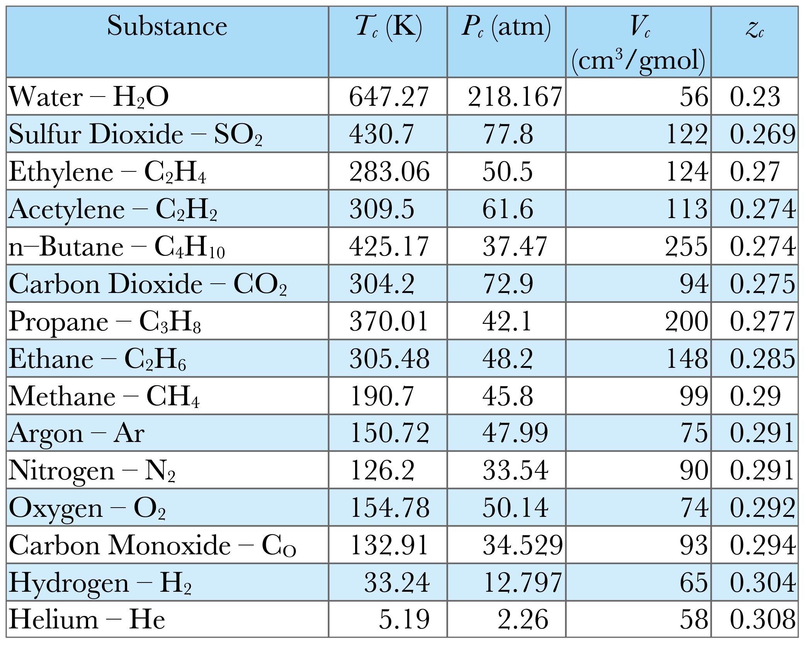
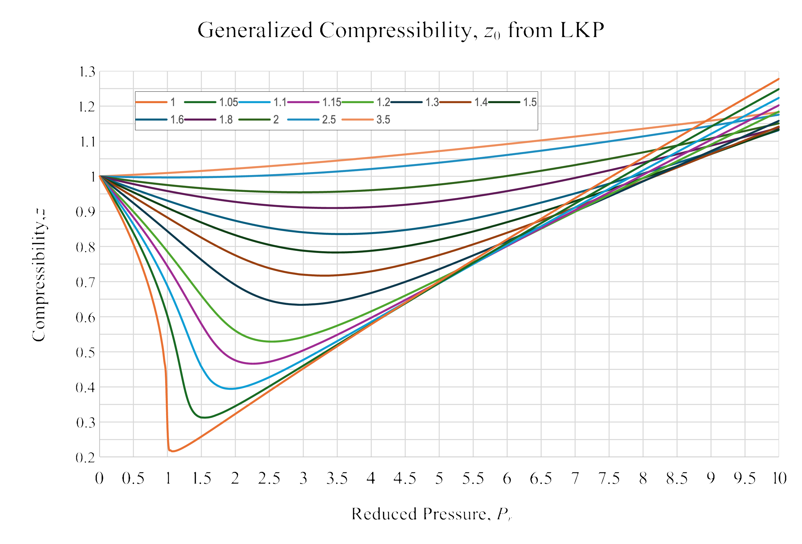

When Getting Gassed Isn’t Ideal, Part 1
DOFPro Team

Real Gases
The ideal gas equation of state is inaccurate at high pressures and low temperatures. In these cases, the \(PVT\) relationship is more complex. We can categorize the non-ideality of the gas with the compressibility, \(z\).
\[ z \equiv \frac{P\hat{V}}{RT} \]
The lowest temperature at which there is no transition from liquid phase to vapor phase with changing pressure is called the critical temperature, \(T_\mathrm{c\ }\), and the pressure where the liquid and vapor phase boundaries meet is called the critical pressure, \(P_\mathrm{c\ }\).
Real Gases (cont.)
At the critical temperature, pressure and molar volume, one can calculate the critical compressibility, \(z_\mathrm{c}\).
\[ z_\mathrm{c} \equiv \frac{P_\mathrm{c}\hat{V}_c}{RT_\mathrm{c}} \]

Table 1
On the right is a table of critical compressibilities for a number of substances, calculated from this table. They range from \(0.230\) to \(0.308\). A table or chart for \(z_\mathrm{c} = 0.27\) would be close for many substances.
Real Gases (cont.)
\[ P_\mathrm{r} \equiv \frac{P}{P_\mathrm{c}},\ \ \ \ \ \ T_\mathrm{r} \equiv \frac{T}{T_\mathrm{c}} \]

Equations of State
A number of models have been developed to fit experimental \(PVT\) data.
Many of them use three parameters to fit the data, the critical pressure, \(P_\mathrm{c\ }\), the critical temperature, \(T_\mathrm{c\ }\), and the acentric factor, \(\omega\).
All three are determined experimentally.
\(P_\mathrm{c}\) and \(T_\mathrm{c}\) are usually used to calculate the reduced temperature, \(T_\mathrm{r}\), and the reduced pressure, \(P_\mathrm{r}\).
Many other equations of state, such as Benedict-Webb-Rubin, have additional or different fitting parameters.
The Virial Equations of State
The virial equation of state is a series expansion in the specific molar volume:
\[ z = \frac{P\hat{V}}{RT}+1+\frac{B}{\hat{V}}+\frac{C}{\hat{V}^2}+\frac{D}{\hat{V}^3}+ \dots\ \ . \]
The series can be truncated depending of the level of accuracy required. Including just the first term gives:
\[ \frac{P\hat{V}}{RT}=1+\frac{B}{\hat{V}}=1+\frac{BP}{RT} \]
where \(B\) is a function of \(P_\mathrm{c\ }\), \(T_\mathrm{c\ }\), and \(\omega\)
The Virial Equations of State (cont.)
For moderate temperatures and pressures, \(B\) can be calculated as:
\[ B_0 = 0.083 - \frac{0.422}{T_\mathrm{r}^{1.6}} \]
\[ B_1 = 0.139 - \frac{0.172}{T_\mathrm{r}^{4.2}} \]
\[ B = \frac{RT_\mathrm{c}}{P_\mathrm{c}}(B_0 + \omega B_1) \]
The truncated virial equation has a less than 2% error for \(P_\mathrm{r} < 2.0\) and \(1 + B_0P_\mathrm{r}/T_\mathrm{r} > 0.8\).
The Virial Equations of State (cont.)
Using the compressibility, \(z\), the truncated virial equation can be written as
\[ z = z_0 + \omega z_1 \]
where
\[ z_0 = 1 + B_0 \frac{P_\mathrm{r}}{T_\mathrm{r}} \]
and
\[ z_1 = B_1 \frac{P_\mathrm{r}}{T_\mathrm{r}} \]
The Soave-Redlich-Kwong Equation of State
From family of cubic equations of state
\[ P = \frac{RT}{\hat{V} - b} - \frac{\alpha a}{\hat{V}(\hat{V}+b)} \]
where
\[ a = 042747 \frac{(RT_\mathrm{c})^2}{P_\mathrm{c}},\ \ \ b = 0.08664 \frac{RT_\mathrm{c}}{P_\mathrm{c}},\ \ \ \alpha = [1+m(1-\sqrt{T_\mathrm{r}})]^2 \]
and
\[ m = 0.48508 + 1.5517 \omega - 0.1561 \omega^2 \]
Example
In Part 2, we will do the following example:
A stream of propane at \(T = 423\ \mathrm{K}\) and \(P = 70\ \mathrm{atm}\), is flowing at a rate of \(100.0\ \mathrm{kmol/h}\). Estimate the volumetric flow rate with ideal gas, generalized compressibility charts, and SRK. The measured specific volume of propane at \(423\ \mathrm{K}\) and \(70\ \mathrm{atm}\) is \(0.2579\ \mathrm{L/mol}\).
The Takeaways
- Real gases are characterized by at least two experimental parameters, \(P_\mathrm{c}\) and \(T_\mathrm{c}\).
- When a third parameter is needed for greater accuracy, the acentric factor, \(\omega\), is used.
- Real-gas properties can be characterized graphically with the generalized compressibility charts.
- Real-gas properties can also be characterized by equations of state, such as the virial equation and the Soave-Redlich-Kwong equation.
Thanks for watching!
The previous in the series video is the link in the upper left. The next video in the series is the link the upper right. To learn more about Chemical and Thermal Processes, visit the website linked in the description.